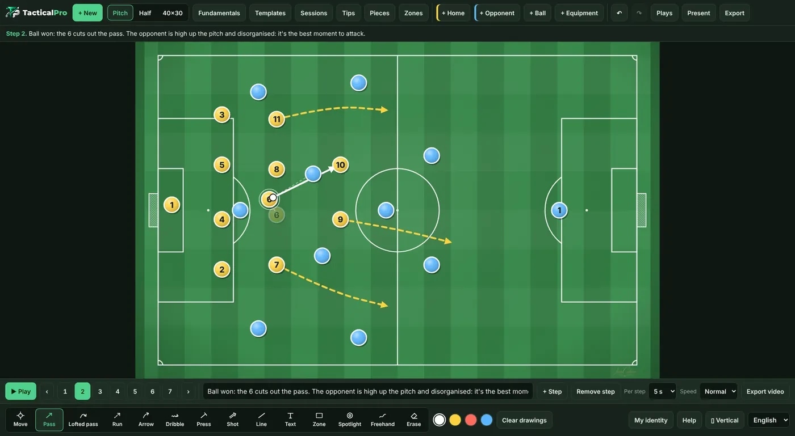
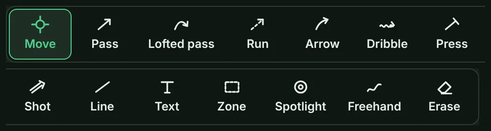
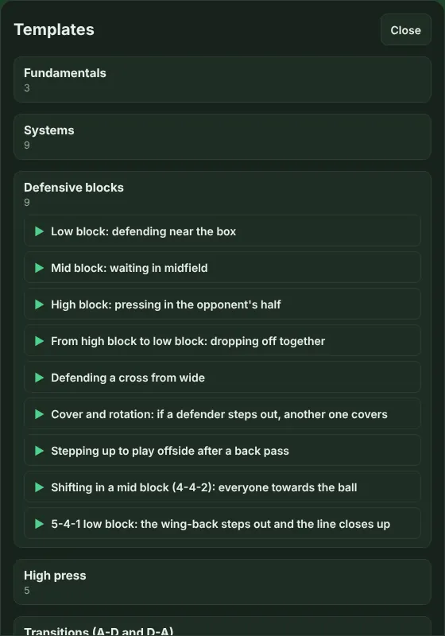
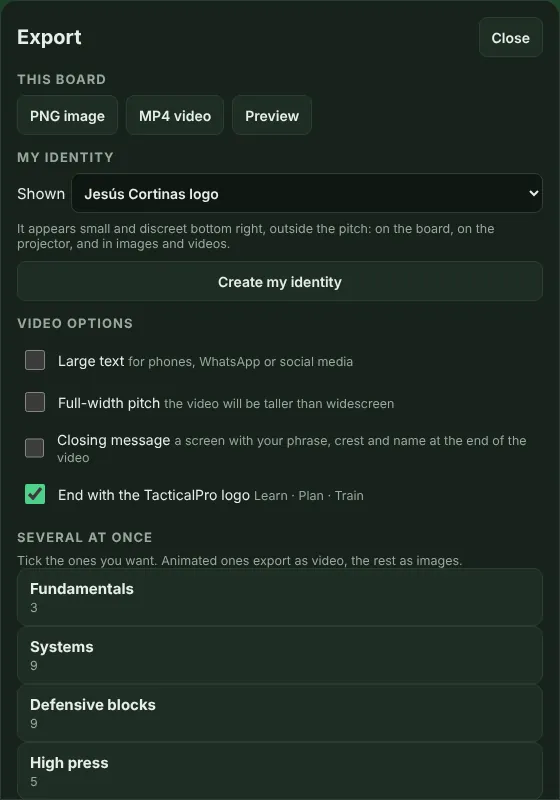
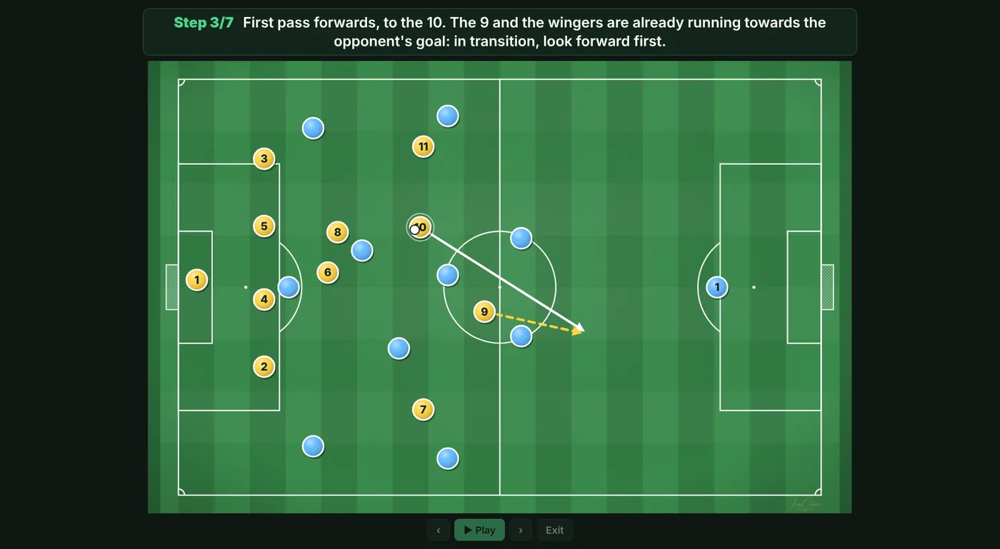

Look up what each button does whenever you need it.
What each button does
At the top are the buttons to create and open content. At the bottom, the animation bar, the tools and the settings.

- + New: clears the pitch. You can undo it with ↶.
- Pitch, Half and 40×30: change the type of pitch.
- Fundamentals, Templates, Sessions and Tips: open the content that comes with the app.
- Pieces: changes the shape of the pieces, whether the number or the name is shown, and each team’s colours.
- Zones: divides the pitch into lanes and thirds to explain where things happen.
- + Home, + Opponent, + Ball and + Equipment: add players, the ball, cones, poles, hurdles, goals and more. «Rotate 45°» turns the equipment.
- ↶ and ↷: undo and redo the last change. On a computer, Ctrl+Z and Ctrl+Y too.
- Plays, Present and Export: save your plays, show them full screen and turn them into images or video.
- Everything you do is saved on your own device. When you open the app again, your last board is still there.
Drawing tools
They are in the bottom bar. Pick one and draw on the pitch. The colours next to them change the colour of the line.

- Move: drags pieces and labels. It is the default tool.
- Pass: a straight line for the ball. When you add a step, the ball goes to its end.
- Lofted pass: the ball goes through the air. It curves towards the side you draw; draw it straight and it goes straight.
- Run: a player moves without the ball. When you add a step, the player goes to its end.
- Dribble: a player moves forward with the ball. When you add a step, they go to its end with the ball.
- Press: a player goes to press an opponent. It moves them too.
- Shot: a shot at goal. It moves the ball.
- Arrow: a pointer to explain something. It is only a drawing and moves nobody.
- Line: a straight line to mark a defensive line or a distance.
- Text: tap the pitch, type a message and choose its colour and size. Drag it to move it and tap it to edit it.
- Zone, Spotlight and Freehand: Zone marks an area, Spotlight highlights a player or a key area and Freehand is a line drawn by hand.
- Erase: tap a line or a piece to remove it. «Clear drawings» removes every drawing on the board or the step.
- With an S Pen: touching a piece moves it; touching the grass draws with the last tool you picked. Hold the side button to erase. Once the app detects the pen, your finger only moves pieces, so you can rest your hand on the screen.
Animation and pace
The animation bar sits above the tools.
- ▶ Play: runs the play from start to finish. The ‹ › arrows and the numbers go step by step.
- + Step and Remove step: add a step after the open one or remove that step.
- Per step and Speed: choose how long each step lasts (5, 8 or 10 seconds) and whether the movement is slow, normal or fast. It applies to playback and to the video.
- Example: to explain in a team talk, 8 seconds and Slow; for WhatsApp, 5 seconds and Normal.
Templates and sessions
You don’t have to start from scratch: the app comes with plenty of ready-made content.

- Templates: line-ups, drills, game situations and set pieces. Tap one and it opens on the pitch. The ones marked ▶ play by themselves.
- Sessions: complete 11-a-side training sessions with their blocks and minutes. MD-3 means 3 days before the match. Tap a block marked ▶ to open its drill.
- Fundamentals and Tips: the essentials of tactics explained from zero, with a dictionary, and practical ideas for training and managing the group.
- Example: open a corner template, change the numbers to your team’s and save it in «Plays» as your own.
Your name and crest
Tap «My identity» at the bottom right to put your name, your team and your crest on your boards, images and videos.
- Tap «+ New profile» and fill in what you like: name, role, club and crest. No field is required.
- The crest looks best as a PNG with a transparent background. You can have several profiles, for example one per team.
- In «What's shown» you choose what appears at the bottom right, small and outside the pitch.
- Closing message: at the end of the video, a screen can show your phrase, your crest and your name.
Exporting video and images
In «Export» you get your board out to send it on WhatsApp or post it online.

- PNG image: a picture of the board as it is.
- MP4 video: the animated play with its texts. It needs a play with steps.
- Preview: watch the video before creating it and try the options.
- Video options: «Large text» to watch it on a phone, «Full-width pitch» and the TacticalPro logo ending, which you can remove.
- Several at once: tick several plays and they are exported together: animated ones as video, the rest as images.
- On a phone: when it is done, «Share» sends it via WhatsApp or another app.
- On a computer: «Save» puts it in your downloads. If the browser cannot create video, use an up-to-date Chrome or Edge.
Using a projector
«Present» shows the board full screen, without buttons, to show it on a TV or a projector.

- On a phone: tap the right side of the screen to go forward one step and the left side to go back.
- On a computer: use the arrow keys or a presentation clicker. The space bar plays the animation.
- To leave, tap «Exit» or press Esc.
- Example: connect your laptop to the dressing-room TV, open your play and tap «Present».
Installing the app and backups
TacticalPro installs from the browser and works offline.
- Android: in Chrome, tap the ⋮ menu and choose «Install app» or «Add to Home screen».
- iPhone and iPad: in Safari, tap Share and then «Add to Home Screen».
- On a computer: in Chrome or Edge, click the install icon in the address bar.
- Backup: your plays live on this device. In «Plays», «Export backup» creates a file with all of them and your identity. On another phone or computer, «Import backup» brings it all back without duplicates.
- Language: the selector at the bottom right switches the app between Spanish and English.